library(tidyverse)
p <- ggplot(data)
p
Visualization
https://www.linkedin.com/in/sebastian-egana-santibanez/
La principal librerÃa para fines de visualización corresponde a GGPLOT2. Crearemos un gráfico simple utilizando la librerÃa ggplot21.
Revisemos el Cheatsheet asociado:
La construcción de un gráfico utilizando GGPLOT2 se realiza a través de los siguientes elementos:
Para cambiar la forma en que se muestran los datos se pueden editar las figuras geométricas (geoms), cambiando color, tamaño y la ubicación de los puntos en x y/o en y.
Inclusive se plantea una plantilla para esto:
ggplot (data = <DATA> ) +
<GEOM_FUNCTION> (mapping = aes( <MAPPINGS> ),
stat = <STAT> , position = <POSITION> ) +
<COORDINATE_FUNCTION> +
<FACET_FUNCTION> +
<SCALE_FUNCTION> +
<THEME_FUNCTION>En donde las dos primeras lÃneas son ogligatoias.
Apliquemos esto a los datos importados. Referencia relevante para esta parte
library(tidyverse)
p <- ggplot(data)
p
p <- ggplot(data) + aes(x = sexo, y = fibe)
p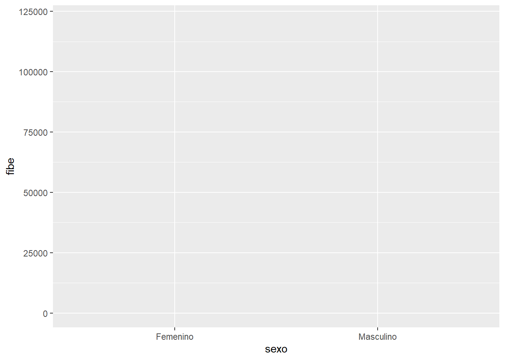
p <- ggplot(data) + aes(x = sexo) + geom_bar()
p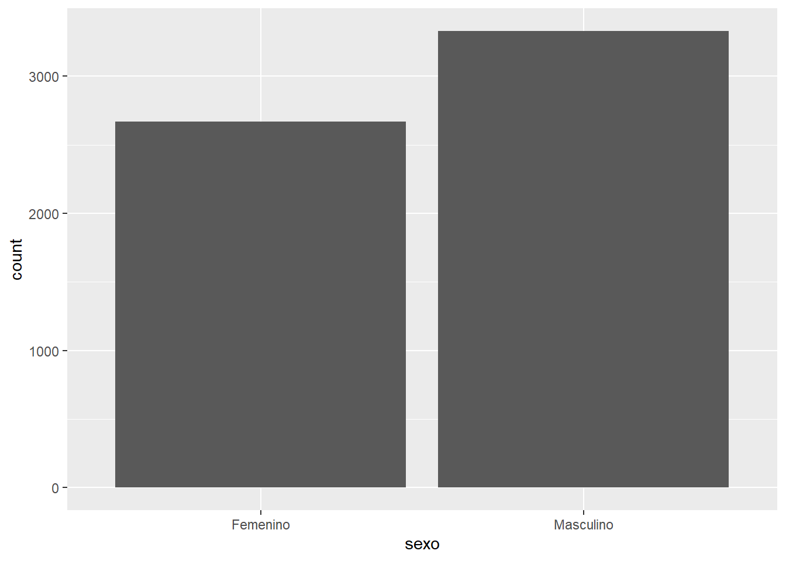
Podemos voltear el gráfico, y agregar diferenciación en base a otra variable:
p <- ggplot(data) + aes(y = sexo) + geom_bar(aes(fill = afectacion))
p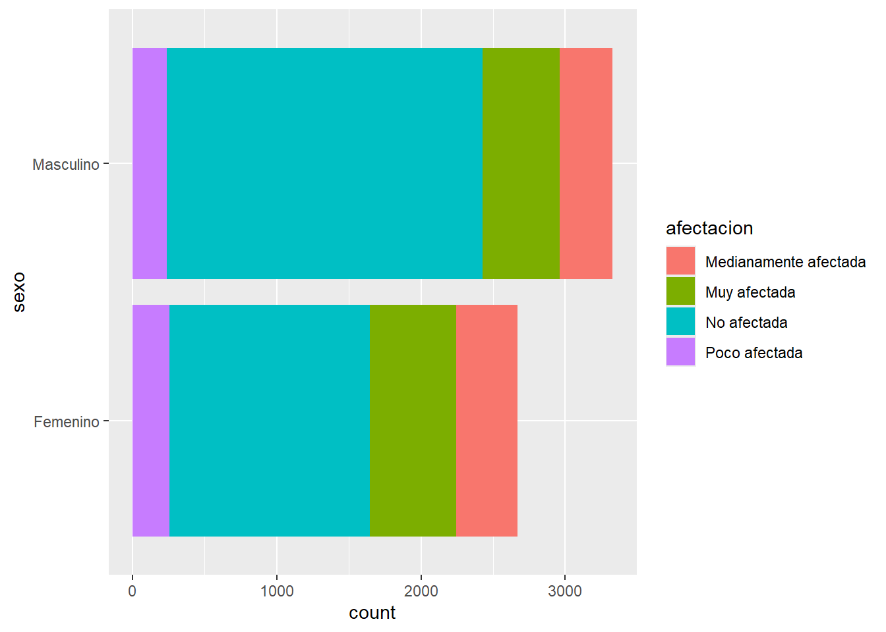
PodrÃamos graficar de manera separada cada columna, en base a esta página :
p <- ggplot(data) + aes(y = sexo, fill = afectacion) +
geom_bar(position=position_dodge())
p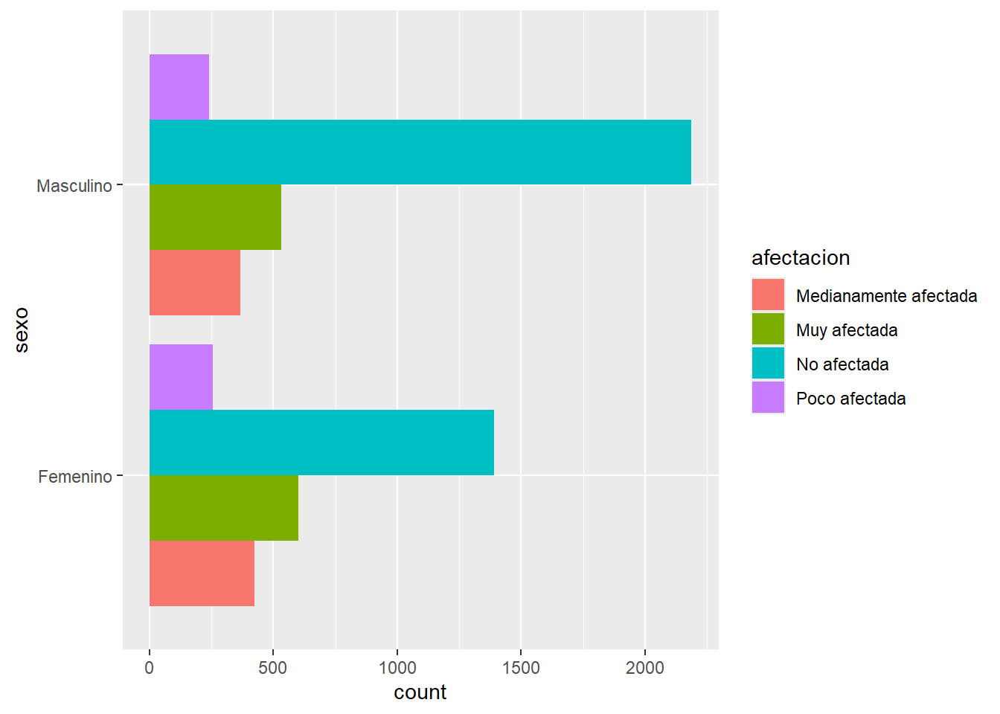
Repliquemos los gráficos en el siguiente enlace.
La visualización, es en parte un arte y en parte una ciencia (Wilke, 2019).
La relevancia de la visualización se genera como una aproximación visual resumida a los datos. El problema, es que no todas las visualizaciones son buenas, en otras palabras no todos los gráficos son construidos de manera correcta.
Un buen gráfico no responde necesariamente sobre el ¿cómo se ve?, sino que debe responder a la necesidad de ¿quién lo ve? y ¿por qué lo ve?
Veamos un primer ejemplo:
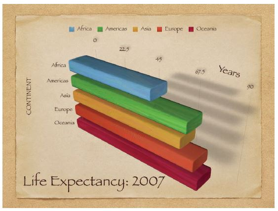
¿Qué le parece a usted? ¿es un buen o mal gráfico?
Otro ejemplo:
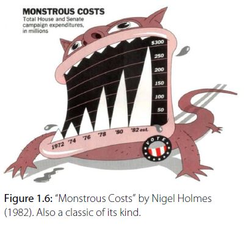
Un gráfico puede tener tres errores:
Feo (Ugly): falla la estética, pudiendo ser claro e informativo.
Malo (Bad): problemas de percepción en el gráfico, pudiendo ser poco claro, confuso o engañoso.
MalÃsimo (Wrong): existen errores matemáticos detrás del gráfico.
De manera aplicada:
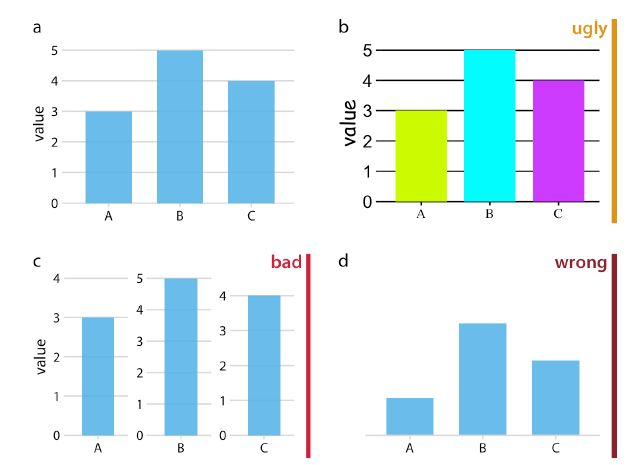
Un ejemplo más realista de lo antes mencionado. Este gráfico, ¿está feo, malo o malÃsimo?
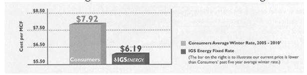
Dos maneras distintas de graficar lo mismo: una mejor que otra.
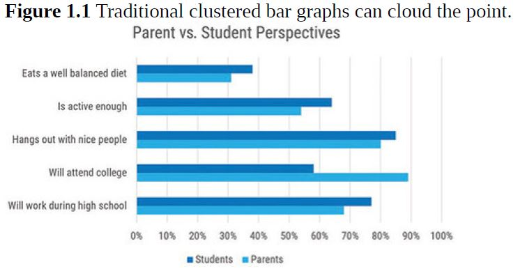
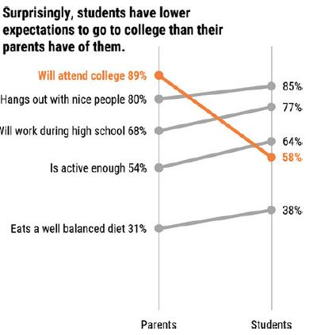
Who and what is involved (¿Quién o qué está involucrado?): Se debe iniciar con un resumen visual sobre lo que se hablará.
How many are involved (¿Qué cantidad está involucrada?): Se deben generar medidas cuantitativas de lo hablado. Cambios en los números también son relevantes.
Where the pieces are located (¿Dónde se ubica?): Presentar alguna relación visual entre lo hablado y su ubicación.
When things occur (¿Cuándo ocurre?): Mostrar algo relacionado con la temporalidad o la secuencia de los eventos en las que ocurren las interacciones relevantes.
How things impact each other (¿Cómo las cosas se relacionan?): Generar una visualización que presente la relación causa - efecto que afectan lo mostrado anteriormente.
Why this matters (¿Por qué es importante?): Se debe concluir visualizado anteriormente.
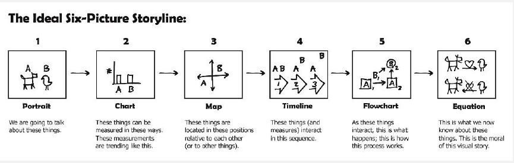
Seis puntos claves:
En relación a este enfoque, se puede consutar el siguiente material:
Wilke, C. O. (2019). Fundamentals of data visualization: a primer on making informative and compelling figures. O’Reilly Media.
Evergreen, S. D. (2019). Effective data visualization: The right chart for the right data. SAGE publications.
Recordar instalar y cargar la librerÃa↩︎